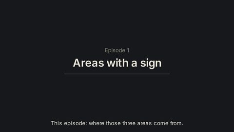
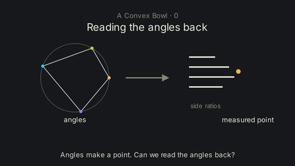

Videos
Two series: the background in total positivity, then the argument itself. They play here; a YouTube channel follows.

Totally Positive · 10 episodes
Ten episodes on the positive Grassmannian: signed areas and Ptolemy's theorem, positivity and its boundaries, cells, canonical forms, the amplituhedron, networks and the dimer model.
- 1Areas with a sign6:12Two arrows in space span a parallelogram, and the areas of its three shadows (4, 2, 1) are the same for every pair of arrows in the plane: only their ratio matters. The ratio is a point of the Grassmannian Gr(2, 3), the determinants are its Plücker coordinates, and in four dimensions they obey one quadratic rule, which on a circle is Ptolemy's theorem.Watch
- 2When every minor is positive8:12For a 2 × n matrix every minor is positive exactly when the columns point in order within a half-turn. One triangulation of the n-gon decides all the minors by subtraction-free Ptolemy steps, so a triangulation is a chart; flips change charts. A minor reaching zero leads to tree space, to the totally nonnegative Grassmannian and to a first look at amplituhedra.Watch
- 3Letting minors hit zero8:55Letting minors reach zero: zeros come in packs, built from loops and runs; the 33 positroid cells of Gr≥0(2, 4); Grassmann necklaces and bounded affine permutations as names for the cells, read as jumps, juggling patterns and riffle shuffles; and the cells that shaded triangles make for any k.Watch
- 4Drawing a cell4:04Plabic graphs draw positroid cells. The rules of the road turn each graph into a permutation that spells the cell's name; faces are coordinates, with labels that give episode 2's charts; square moves are flips; and Le-diagrams are a fourth picture of the same cell.Watch
- 5Forms that know their boundary2:28A shape's canonical form has poles on its boundary and residues that are the boundary's forms. Worked out for a segment, a triangle and a pentagon: the cuts that triangulate a polygon cancel, so the form depends only on the shape.Watch
- 6The amplituhedron5:22The amplituhedron as the image of the nonnegative Grassmannian under a positive matrix Z. Its tiles for m = 1 and m = 2 are cut out by sign flips, and for m = 4 the BCFW cells are listed by chord diagrams; why the form of the whole shape is the sum of the forms of the tiles.Watch
- 7Networks inside positivity7:10Weights for a plabic graph from matchings, resistor networks, the Ising model and folded paper: matchings measure a point, Lam's resistors and the Galashin–Pylyavskyy Ising point fill balls in the Grassmannian, and origami crease patterns give the BCFW tiling of the amplituhedron.Watch
- 8The dimer model6:46Counting tilings by determinants (Kasteleyn), minors of a plabic graph as Kasteleyn determinants, double dimers and Kuo's condensation, the square move with weights, spanning trees, and the critical (isoradial) weights of Kenyon that turn resistors, spins and dimers into one picture; ending in a graph drawn from unit vectors.Watch
- 9The frontier3:51Galashin puts an angle at each boundary point of a plabic graph and weights each inner edge by the sine of an angle difference; measuring gives the critical cell. The regular cyclic point, Galashin's Conjecture 4.3 and the questions still open, with the status of each result of the accompanying papers.Watch
- 10Coda: seen in a plane3:58A positive point of Gr(3, 6) watched in three planes: its shadow, the view from a column, and the plabic tiling of Oh, Postnikov and Speyer; every square move is a Ptolemy flip.Watch

A Convex Bowl · 9 episodes
Nine episodes (0 to 8) on Galashin's Conjecture 4.3, following a proof candidate that the critical measurement map is the gradient of a convex function. The paper is a proof candidate pending external review.
- 0Reading the angles back2:17The recovery question and the critical electrical–Ising payoff precede the twist and all angle notation. This is a trailer for a proof candidate, with external review pending.Watch
- 1The conjecture11:00Galashin measures n angles into a point of the Grassmannian, and the points reached form the critical cell. Turning all the angles of one component together changes nothing, so one angle per component is fixed: the gauge slice.Watch
- 2Gradients of bowls9:54The gradient of a strictly convex function is one-to-one. A nonsingular Hessian makes it locally invertible. The inverse recovers a triangle's angles from its side ratios.Watch
- 3New coordinates9:56The four necklace minors of the measured point never vanish on the open cell. The Muller–Speyer left twist turns each of them into its reciprocal. Taking logarithms turns the monomials into a linear form in ℓ_e = log sin δ_e, the matrix M_N.Watch
- 4The measurement is a gradient7:39Episode 3's four logarithms of twisted necklace minors, differenced row to row and relabelled, are exactly the slope of the bowl Ψ_f = Σ L(δ_e). One more derivative gives a graph Laplacian with conductances cot δ_e.Watch
- 5Winding cycles4:28An obtuse angle δ makes its Hessian weight cot δ negative, so Ψ is not convex edge by edge. A cycle of crossing edges that goes once around (exactly one wrapped edge) has angles summing to π. On such a cycle the cotangent cycle inequality makes the cycle's form ≥ 0, with equality only for constant shifts.Watch
- 6Putting it together4:07The gauge slice is an open convex polytope, and on it the bowl is strictly convex. A strictly convex bowl has a one-to-one gradient, so measuring is one-to-one. The inverse is the bottom of a tilted bowl, found by descent.Watch
- 7Hyperbolic volume4:08The bowl Ψ of episodes 2–6 is not a new function. Up to a constant it is minus a sum of Milnor's Lobachevsky functions, and that sum is a hyperbolic volume: each winding cycle, drawn at twice its angles on a circle and coned to the point at infinity, is an ideal polyhedron. The reading does not give control at the chamber's edge.Watch
- 8What it gives, what is open3:14The Hessian sits between two multiples of the crossing graph's Laplacian. So the inverse is Lipschitz, in these coordinates. Through the inverse, critical electrical networks and critical Ising models of the same region correspond, but only on the critical loci.Watch